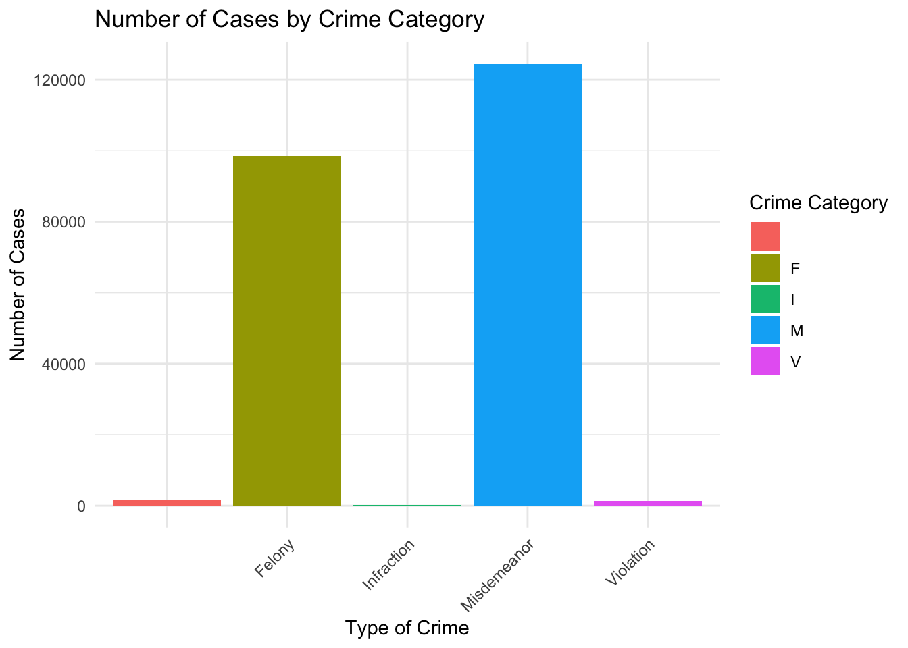

| Variable | Data_Types | Description |
|---|---|---|
| ARREST_DATE | calendar date | Exact date of arrest for the reported event |
| PD_DESC | text | Description of internal classification corresponding with PD code (more granular than Offense Description) |
| OFNS_DESC | text | Description of internal classification corresponding with KY code (more general category than PD description) |
| LAW_CAT_CD | text | Level of offense: felony, misdemeanor, violation, infraction |
| ARREST_PRECINCT | number | Precinct where the arrest occurred |
| AGE_GROUP | text | Perpetrator’s age within a category |
| PERP_SEX | text | Perpetrator’s sex description |
| PERP_RACE | text | Perpetrator’s race description |
| X_COORD_CD | text | Midblock X-coordinate for New York State Plane Coordinate System |
| Y_COORD_CD | text | Midblock Y-coordinate for New York State Plane Coordinate System |
| Latitude | number | Latitude coordinate for Global Coordinate System |
| Longitude | number | Longitude coordinate for Global Coordinate System |
| Lon_Lat | point | Georeferenced Point Column based on Longitude and Latitude fields |
Data
We describe the sources of our data and the cleaning process, and some explantory analysis.
Data background
Data source and reasons to collect it
This two datasets comes from the NYPD website and is collected by the Office of Management Analysis and Planning of the New York City Police Department. These datasets provides a general overview of the nature of police enforcement activity in NYC by the NYPD to the public in 2022 and 2023.
The NYPD’s initiative to collect and disseminate data on crime rates and police enforcement activities is a multifaceted strategy aimed at enhancing public safety, ensuring transparency, and fostering community trust. This effort not only serves to keep the public informed about the safety of their neighborhoods but also aids the police department in strategic planning and efficient resource allocation. By analyzing crime trends, the NYPD can deploy resources more effectively, targeting areas with higher crime rates or specific types of criminal activities. Furthermore, making such data accessible supports policy making and evaluation, enabling lawmakers to craft and assess laws and policies with an eye toward crime reduction. Additionally, this transparency encourages community engagement and collaboration, as residents become more aware of the challenges their communities face and are thus more likely to work alongside the police to develop strategies for crime prevention. In sum, the NYPD’s collection and sharing of this dataset are integral to its broader objectives of improving public safety, enhancing operational efficiency, and building a collaborative relationship with the communities it serves.
Issues on how the data was collected
The collection of NYPD Arrest Data raises several concerns regarding its collection and subsequent analysis. Reporting biases might result from inconsistencies in how incidents are documented across different precincts or by individual officers, affecting data uniformity and reliability. Human error in data entry could introduce inaccuracies, including misclassifications or incorrect demographic information, which could mislead analyses, particularly in trend or demographic studies.
Sample’s population
This sample population consists of individuals arrested by the NYPD, as recorded in this dataset for the year to date. It represents only the subset of the population that has been arrested and does not reflect the broader New York City population.
Sample’s biases
There might be some biases in the sample. In the dataset, certain age groups are disproportionately represented.Over representation of the 25-44 age group and certain racial demographics suggests possible targeted enforcement or societal issues, which could bias data-driven analyses. Additionally, the dataset disproportionately represents certain demographics in terms of race.
The purpose and previous research about data
This data can be used to inform policy decisions related to law enforcement practices, resource allocation, and community support programs. By analyzing patterns and trends in the data, policymakers can identify areas in need of intervention or reform. Moreover, researchers may examine the data to study crime trends, the effectiveness of policing strategies, and the impact of socio-economic factors on crime rates. Comparisons with previous years can reveal changes in crime patterns or the effectiveness of law enforcement policies. However, I didn’t find other research on the same data. Researchers, journalists, and policymakers have explored various questions using NYPD Arrest Data, such as: Are certain demographic groups disproportionately represented in arrest statistics? If so, what might be contributing to these disparities? Are there significant differences in arrest rates across different boroughs or neighborhoods, and what factors contribute to these differences?
Data Loading and Cleaning
Data Loading and Cleaning Script
We merge the data from 2022 and 2023 together, for the future trend and comparison analysis between these two years. In the data cleaning, we delete the arrest ID, two classification ID, and jurisdiction code. These variables are redundant and not relevant with our research. We remove rows with any NA and null values from the dataset. We also delete undefined data in Level of offense: felony, misdemeanor, violation, infraction. All in all, it have 411745 rows and 13 columns. Below part shows the modified variables table.
Variables Description
There are 62 crimes, the below table shows the specific description and level of the top 10 crimes in oder of the incident number.
| OFNS_DESC | PD_DESC_Details |
|---|---|
| ASSAULT 3 & RELATED OFFENSES | ASSAULT 3, MENACING,UNCLASSIFIED, OBSTR BREATH/CIRCUL |
| PETIT LARCENY | LARCENY,PETIT FROM OPEN AREAS,, LARCENY,PETIT BY ACQUIRING LOS |
| FELONY ASSAULT | STRANGULATION 1ST, ASSAULT 2,1,UNCLASSIFIED, ASSAULT POLICE/PEACE OFFICER |
| MISCELLANEOUS PENAL LAW | PUBLIC ADMINISTRATION,UNCLASSI, AGGRAVATED HARASSMENT 1, MENACING 1ST DEGREE (VICT NOT, BRIBERY,PUBLIC ADMINISTRATION, RECKLESS ENDANGERMENT 1, UNAUTHORIZED USE VEHICLE 2, AGGRAVATED CRIMINAL CONTEMPT, TRESPASS 4,CRIMINAL SUB 2, CRIMINAL CONTEMPT 1, THEFT OF SERVICES- CABLE TV SE, FORGERY-ILLEGAL POSSESSION,VEH, FALSE REPORT 1,FIRE, BAIL JUMPING 1 & 2, CONSPIRACY 2, 1, PROMOTING A SEXUAL PERFORMANCE, TRESPASS 1,CRIMINAL, MAKING TERRORISTIC THREAT, BRIBERY,FRAUD, IMPERSONATION 1, POLICE OFFICE, CONSPIRACY 4, 3, ESCAPE 2,1, SOLICITATION 3,2,1, CRIMINAL, VEHICULAR ASSAULT (INTOX DRIVE, COERCION 1, TAMPERING WITH A WITNESS, FACILITATION 3,2,1, CRIMINAL, POSTING ADVERTISEMENTS, PERJURY 2,1,ETC, USURY,CRIMINAL, SUPP. ACT TERR 2ND, RIOT 1, EXPOSURE OF A PERSON, END WELFARE VULNERABLE ELDERLY PERSON, USE OF A CHILD IN A SEXUAL PER, FIREWORKS, POSSESS/USE, ENTERPRISE CORRUPTION, NUISANCE, CRIMINAL, EAVESDROPPING, TERRORISM PROVIDE SUPPORT |
| DANGEROUS DRUGS | CONTROLLED SUBSTANCE, POSSESSI, CONTROLLED SUBSTANCE,INTENT TO, SALE SCHOOL GROUNDS, CONTROLLED SUBSTANCE,POSSESS., DRUG PARAPHERNALIA, POSSESSE, CONTROLLED SUBSTANCE, INTENT T, CONTROLLED SUBSTANCE,SALE 3, CONTROLLED SUBSTANCE,SALE 2, CONTROLLED SUBSTANCE,SALE 1, CONTROLLED SUBSTANCE, SALE 5, CONTROLLED SUBSTANCE, SALE 4, SALE SCHOOL GROUNDS 4, POSS METH MANUFACT MATERIAL, SALES OF PRESCRIPTION, DRUG, INJECTION OF, USE CHILD TO COMMIT CONT SUB OFF, POSSESSION HYPODERMIC INSTRUME |
| CRIMINAL MISCHIEF & RELATED OF | CRIMINAL MIS 2 & 3, MISCHIEF,CRIMINAL, UNCL 2ND, CRIMINAL MISCHIEF,UNCLASSIFIED 4, CRIMINAL MISCHIEF 4TH, GRAFFIT, FALSE ALARM FIRE, TAMPERING 1,CRIMINAL, TAMPERING 3,2, CRIMINAL, MISCHIEF, CRIMINAL 4, BY FIRE, MISCHIEF 1,CRIMINAL,EXPLOSIVE, RECKLESS ENDANGERMENT OF PROPE, MISCHIEF, CRIMINAL 4, OF MOTOR, MISCHIEF, CRIMINAL 3 & 2, OF M |
| ROBBERY | ROBBERY,OPEN AREA UNCLASSIFIED, ROBBERY,CAR JACKING, ROBBERY,GAS STATION |
| GRAND LARCENY | LARCENY,GRAND FROM OPEN AREAS, UNATTENDED, LARCENY,GRAND FROM PERSON,UNCL, LARCENY,GRAND BY EXTORTION, AGGRAVATED GRAND LARCENY OF ATM, LARCENY,GRAND BY THEFT OF CREDIT CARD, LARCENY,GRAND FROM BUILDING (NON-RESIDENCE) UNATTENDED |
| VEHICLE AND TRAFFIC LAWS | TRAFFIC,UNCLASSIFIED MISDEMEAN, LEAVING SCENE-ACCIDENT-PERSONA, RECKLESS DRIVING |
| DANGEROUS WEAPONS | CRIMINAL POSSESSION WEAPON, WEAPONS, POSSESSION, ETC, WEAPONS POSSESSION 3, WEAPONS,MFR,TRANSPORT,ETC., CRIMINAL DISPOSAL FIREARM 1, CRIM POS WEAP 4, WEAPONS DISPOSITION OF, UNFINSH FRAME 2, MANUFATURE, TRANSPORT, DEFACE, ETC..., FIREARMS LICENSING LAWS |
Basic Explantory Analysis
RACE

On this graph we are showing the number of cases per race among all races. On this graph we can see that the lowest number of cases per race are represented by the Indian/Alaskan native people. The highest is for colred people having over 11k cases during this period.
Crime Categories

The bar chart displays the frequency of various crime types, categorized as Felony, Infraction, Misdemeanor, and Violation. The vertical axis indicates the number of cases, while the horizontal axis lists the crime categories. Misdemeanor appears to be the most common, followed by felonies. The crime incidents of infraction and violation are the least with small numbers of cases.
AGE
Selecting by Incident_Count
`summarise()` has grouped output by 'LAW_CAT_CD'. You can override using the
`.groups` argument.
The bar chart shows the distribution of crime incidents across different categories—Infraction, Violation, Felony, and Misdemeanor—segregated by age groups. The graph illustrates that the 25-44 age group has the highest incidence of felonies, a significant number of misdemeanors, and relatively lower counts for infractions and violations, suggesting this age range is the most involved in crime. The other age groups contribute fewer incidents across all categories, with the least involvement by those under 18 and over 65.